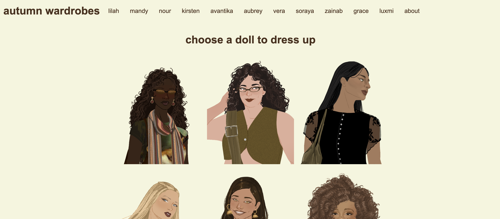
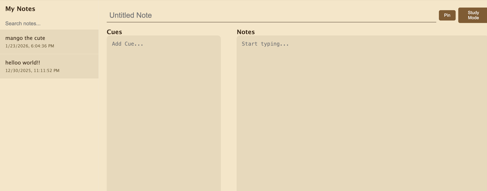

autumn wardrobes
a simple dress-up game inspired by curated outfits for fall.

project gallery
a simple dress-up game inspired by curated outfits for fall.

a note taking app set up in the cornell note-taking format, with cues, notes, and a summary.
